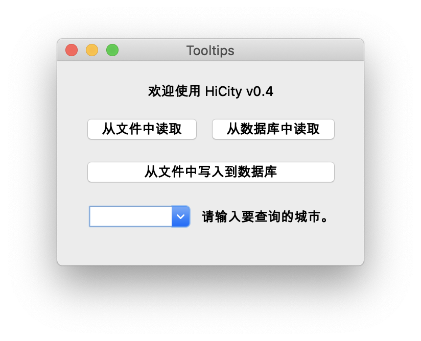
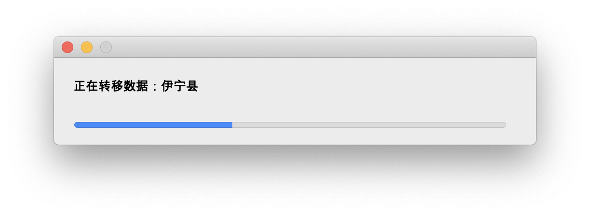
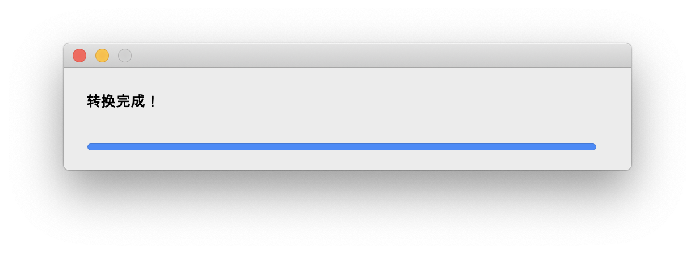
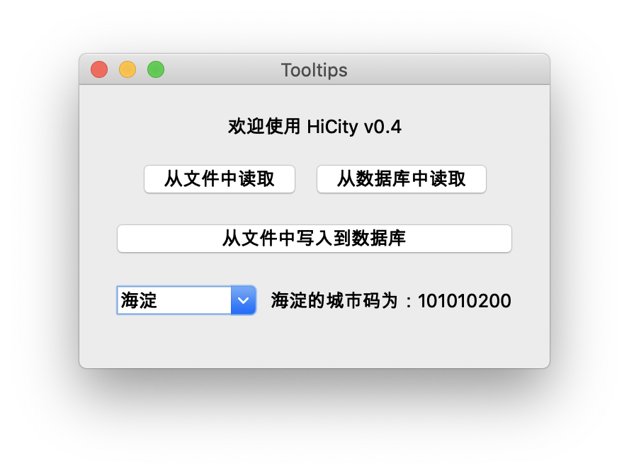
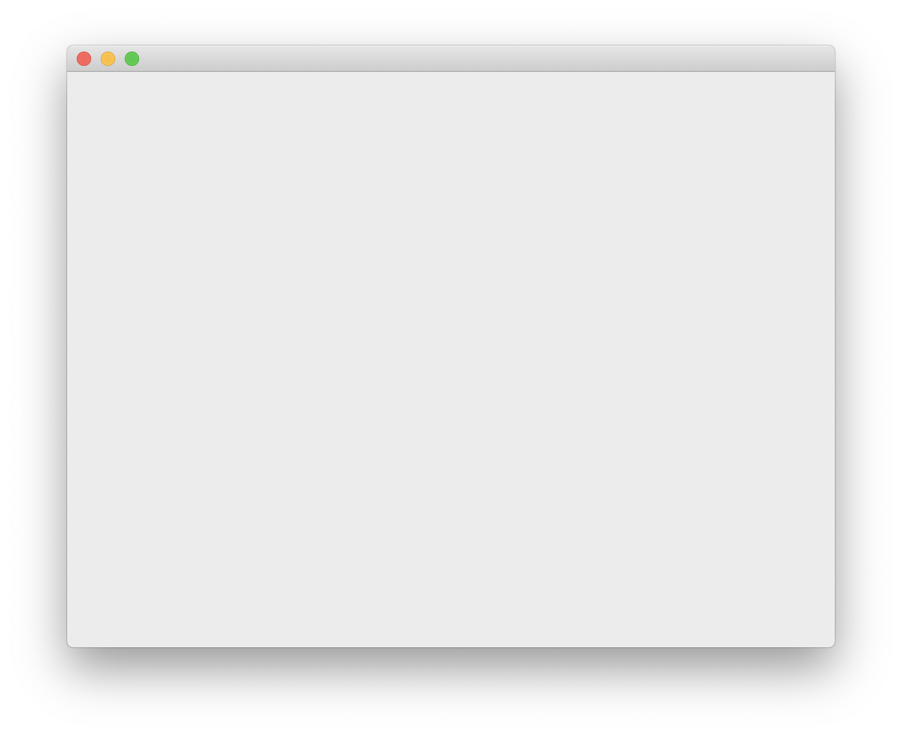
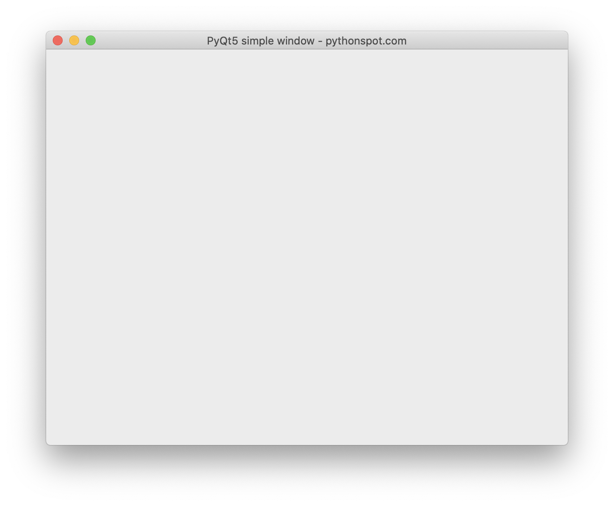

HiCity v0.4 记录
HiCity v0.4 是一个基于pyqt的城市码查询小工具，是我python课的第四次作业。这篇文章则是记录一下再编写这个程序时所遇到的问题和解决方法，以免再次落入同样的窘境之中。
Prologue
这个小窗口部件实现了从文件中读取城市代码、从数据库中读入城市代码，以及从文件中把城市代码写入到数据库中。当然，作业中要求要加入数据库的增删查改并没有实现。然而在了解了pyqt的大致使用方法之后，这种功能加起来也不是太难，于是便现在就将 HiCity v0.4 的开发流程记录下来了。
本篇文章将按照QWiget、QButton、QHBoxLayout/QVBoxLayout、QTheard、pyqtSignal的顺序来记录如何写一个有进度条的、能自动补全的基于qt的小应用。
HiCity v0.4
◎ 程序主界面
这个主界面非常的直白。但是不足的地方在于从文件进行的操作是在源码中写死了的。QT 支持点击一下按钮就调用一个取文件的操作。这个功能的实现会在后续更新。
写死的文件路径的写法也是有所讲究的。以前我喜欢直接把相对路径的字符串拍上去，但是由于我使用了一个大的文件夹专门写python，这种作业就会单独开一个小文件夹来方便管理。但是在如下文件结构中，往往需要加”homework/“前缀才能正常的访问搭配 data.txt 文件。
.
|– python
|– others.py
|– homework
|– HiCity v0.1.py
|– HiCity v0.2.py
|– HiCity v0.3.py
|– HiCity v0.4.py
|– data.txt
但是交作业的时候我们并不知道交上去的作业文件结构是什么样的，也不知道老师的python是在哪个路径下跑的。因此，我们可以通过 os.path.join(os.path.dirname(__file__), "data.txt")来愉快的访问数据文件。因为你交上去的作业py文件和数据总是在一个文件夹下，所以这样就能避免许多路径上的问题。其中os.path.dirname(__file__)是返回当前文件的绝对路径，os.path.join()函数则是将文件路径连接起来。
下面就是一堆界面的截图。◎ 正在载入的样子◎ 载入完成的样子◎ 查询的样子
然后，就要开始记录这是怎么实现的了！
QWiget
QWiget就是一个窗口类。一个如下的代码能够直接输出一个窗口。
1 | from PyQt5.QtWidgets import QWidget,QApplication |
◎ 大概长这样
当然我们的窗口自然不能什么都没有，所以我们常用的方法是继承QWidget类来添加我们想要的元素。那么借用一下官方的教程代码我们就能给这个窗口添加我们想要的元素了。
1 | import sys |
◎ 于是他有了预设大小以及一个标题
如果你要做一个按下按钮才弹出的窗口的话，注意不要在setupUI()函数中使用self.show()函数，否则这个窗口将在创建的时候就展示出来了。
QButton
这一部分我将记录一下pyqt中，信号与槽。信号就如同字面意思的信号，例如按下按钮。而有信号发出就得有东西来接收信号。那么接受和处理信号的就由槽函数来完成。我们还是借用官方代码来做示范。
1 |
|
这里我们主要关心的是这几行代码：
1 | button.clicked.connect(self.on_click) |
第一行代码表示将点击完成的信号与self.on_click()函数相连接。这表示当按钮被点击之后，按钮发出的点击信号将被self.on_click()函数处理。而@pyqtSlot()装饰器则是将python函数转换为一个槽函数。然而QT允许任意函数作为槽函数被调用，所以可以不用这个装饰器，更多内容可以看这里。
同时，如果你的命名格式是这样的：
1 |
|
那么你可以使用这个函数来完成自动连接：
1 | QMetaObject.connectSlotsByName(QObject) |
例如下面的写法是和上面的连接方法是等价的：
1 | self.okButton = QPushButton("OK", self) |
代码来自于这里。